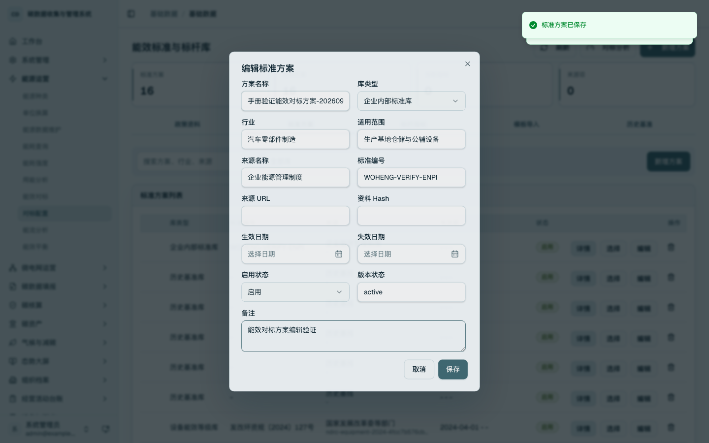
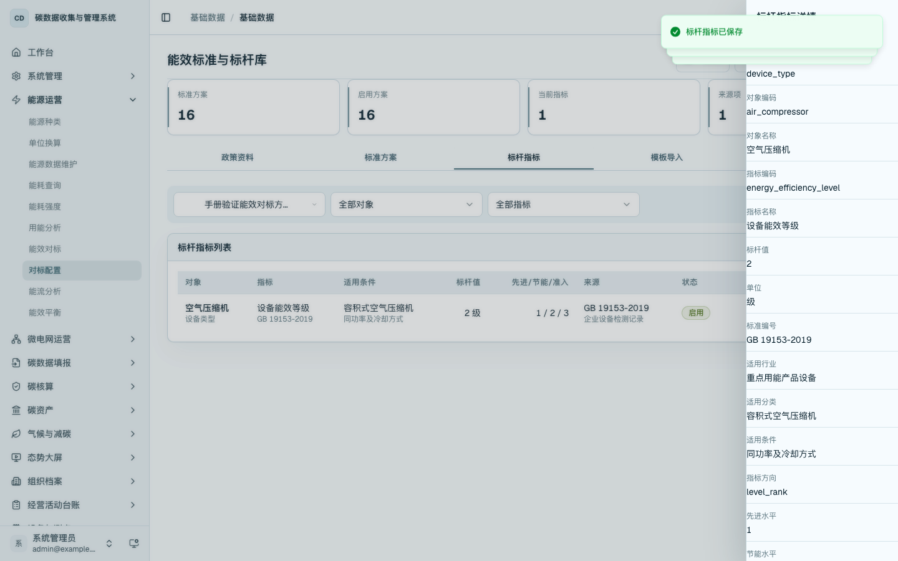
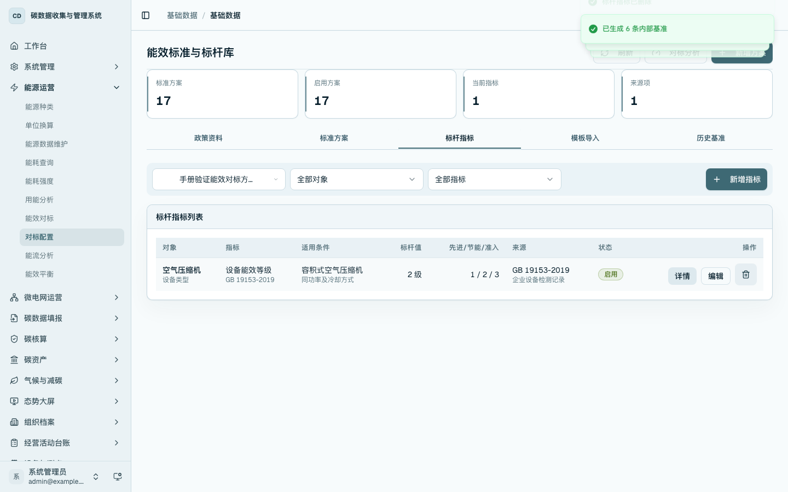
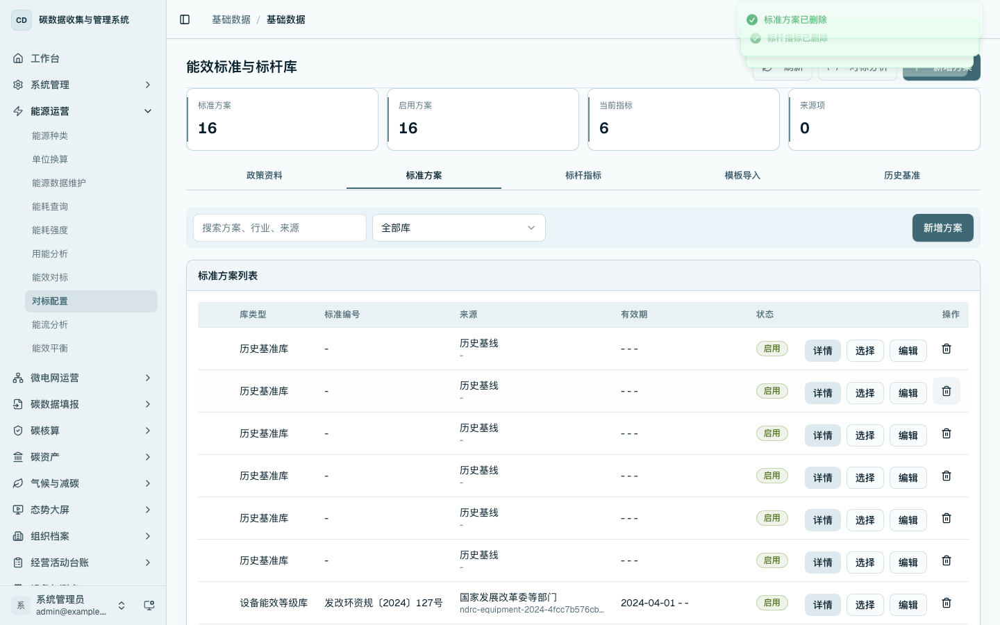

能效标准与标杆库维护
本章说明如何维护能效对标使用的企业标杆方案、标杆指标，以及如何查看政策标准来源。该页面只承担标准库维护，不用于录入能源数据、设备数据、产量数据或价格数据。
菜单位置
- 侧边栏：进入「能源运营 / 对标配置」，打开
/data/energy-benchmark。 - 能效对标分析页：在
/energy/benchmark点击「标准库」进入维护页。
页面结构
进入 /data/energy-benchmark 后，页面分为三个页签：
- 企业标杆：维护企业自定义的能效标杆方案和标杆指标。
- 政策标准：查看政策资料、政策标杆库和设备能效等级库，政策库由同步任务生成。
- 模板导入：批量导入企业标杆指标，并在导入前进行预检。

企业标杆方案
在「企业标杆」页签中，先维护标准方案。方案用于确定一组标杆指标的适用行业、适用范围、来源、标准编号、有效期和启用状态。
点击「新增方案」，填写方案名称、行业、适用范围、来源名称、标准编号、生效日期、失效日期和启用状态后保存。保存后的方案进入企业标杆方案列表，可作为后续标杆指标的归属方案。

点击方案行的「详情」可查看方案完整信息。

点击方案行的「编辑」可调整企业标杆方案的适用范围、来源、有效期和启用状态。保存后，列表回显更新后的方案信息。

标杆指标
选中企业标杆方案后，在同一页签维护标杆指标。标杆指标用于确定具体对象的对标口径，支持基地总体、区域、用能系统、设备类型、设备、产线/工序和产品等对象层级。
点击「新增指标」，填写对象层级、对象编码、对象名称、指标、单位、标杆值、先进水平、节能水平、准入/基准水平、适用行业、适用分类、适用条件、参考标准、来源和阈值。设备能效等级类指标按“等级数字越小越优”的口径维护。

点击标杆指标行的「详情」，查看对象、指标、适用条件、等级值、标准来源、来源 URL、hash、阈值和启用状态。

点击「编辑」可调整企业标杆指标。保存后，列表展示新的标杆值、等级值、适用条件和状态。

政策标准
切换到「政策标准」页签，查看可同步的政策资料、来源网页、附件地址和已同步的政策标准。政策标准用于对标分析的标准来源追溯，普通企业用户不在该页签编辑政策库内容。
点击「同步政策库」后，平台从政策资料来源同步政策标杆库和设备能效等级库，并记录来源信息。同步后的政策标准可在列表中查看来源、标准编号、有效期和启用状态。
模板导入
切换到「模板导入」页签，选择企业标杆方案，粘贴或导入 CSV 模板内容。点击「预检」后，系统检查对象类型、指标编码、标杆值等必填字段，并逐行展示可导入或错误原因。
预检通过后点击「导入」，标杆指标进入同一套指标台账，可继续在「企业标杆」页签查看、编辑或删除。
删除与清理
录入错误或不再使用的企业标杆指标，可在指标列表删除。删除后，当前方案下不再显示该指标。

标准方案删除前应先清理其下标杆指标。方案删除后，企业标杆方案列表不再显示该方案。

操作要点
- 政策标杆库和设备能效等级库由政策资料同步形成，企业用户只维护企业标杆方案和企业标杆指标。
- 标杆指标必须明确对象层级、指标、单位、标杆值、适用条件和来源。
- 模板导入使用同一套字段校验，导入后仍进入统一标杆指标台账。
- 对标分析在
/energy/benchmark完成，标准库维护在/data/energy-benchmark完成。